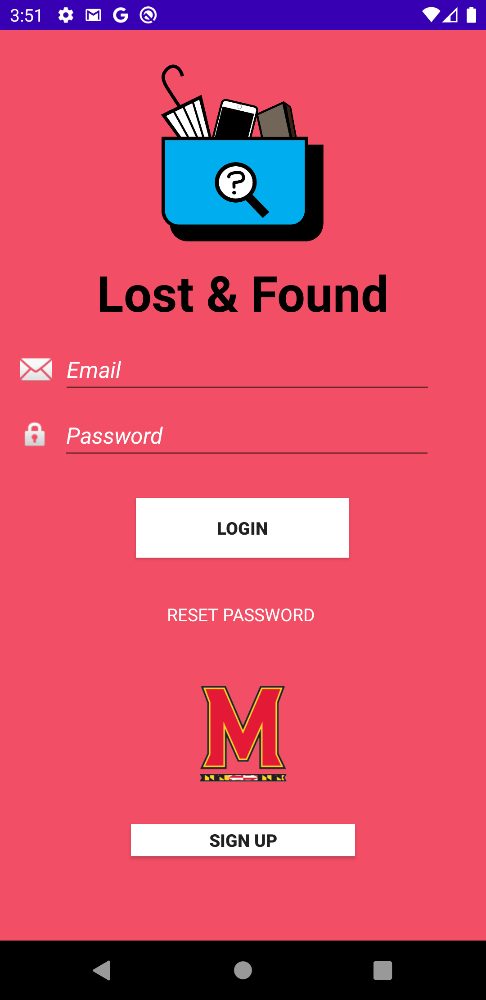

Lost & Found
External link to .apk: https://github.com/JosephAntony1/HoneyGuide/raw/master/app-debug.apk
External link to source zip: https://github.com/JosephAntony1/HoneyGuide/archive/master.zip
App Description
Lost And Found is an app that allows UMD students and faculty to quickly report and/or find their lost items. By providing secure authentication (to only those in the UMD world), the app prevents unwanted users from accessing core information. Users can submit new items, claim items that are theirs, and refresh to see the most up-to-date list of items on the database. It is a quick-and-easy way to find what you lost, or help someone else do the same! Lost and Found was developed by Tae Jung, Vikram Sehgal, Matt Wong, and Srivats Narasimhan.
Screenshots


External libraries and codes
- Helper functions to get filepath of images. https://gist.github.com/MeNiks/947b471b762f3b26178ef165a7f5558a/
- com.google.firebase.auth.FirebaseAuth
- com.google.firebase.auth.ktx.auth
- com.google.firebase.ktx.Firebase
- com.bumptech.glide.Glide
- com.google.firebase.database.DatabaseError
- com.google.firebase.database.DataSnapshot
- com.google.firebase.database.DatabaseReference
- com.google.firebase.database.ValueEventListener
- com.google.firebase.database.ktx.database
- com.google.firebase.ktx.*
- com.google.firebase.storage.ktx.storage
- com.bumptech.glide.Registry
- com.bumptech.glide.annotation.GlideModule
- com.bumptech.glide.module.AppGlideModule
- com.firebase.ui.storage.images.FirebaseImageLoader